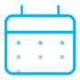

Pour les mairies, les intercommunalités, les départements et les régions
Gérez vos installations sportives. Accompagnez vos clubs.
FoundClub relie la commune, ses installations et ses clubs : vous attribuez les créneaux de la saison, vous tranchez les demandes, vous prévenez les clubs d'une fermeture et vous parlez à leurs dirigeants.
20 minutes, en visio ou à la mairie · sur ordinateur et sur téléphone
Ce que la commune fait avec FoundClub
Sur ordinateur, le menu de la Ville réunit Accueil, Demandes, Planning, Clubs, Messages et Notifications. Sur téléphone, quatre onglets : Accueil, Demandes, Planning et Messages ; vos clubs s'ouvrent depuis l'accueil.
Votre accueil
Ce qui vous attend (demandes, fermetures à venir), vos six actions, l'occupation de la semaine par installation et vos clubs en nombres.
Vos installations
Gymnases, terrains, salles, piscines, dojos… Pour chacune, son adresse et le nombre d'équipes accueillies à la fois.
Les créneaux de la saison
Une installation, un jour, des heures, un club et, si vous le souhaitez, une équipe : le créneau revient chaque semaine. Le club y pose ses entraînements sans rien vous demander, et il est prévenu de chaque changement.
Le planning
Jour, semaine, mois ou liste, et 3 jours sur téléphone : la mairie et les clubs rattachés voient les mêmes réservations, et la mairie voit en plus d'où vient chaque place.
Les demandes
Hors de ses créneaux, la séance d'un club attend votre décision, même s'il reste de la place. Vous voyez qui est déjà là, puis vous acceptez ou refusez avec un mot, pour une date, toute la série ou les dates choisies.
Fermer et bloquer
Vacances, travaux, manifestation : fermez une installation sur une période, ou bloquez un créneau pour la Ville. Les clubs touchés sont prévenus, rien n'est annulé à leur place, et une actualité « Fermeture » peut partir en même temps.
Actualités et messages
Forum, subventions, travaux : publiez une actualité, avec une photo ou un document, pour les dirigeants, les clubs d'une installation ou tous les membres. Un canal réunit la Ville et les dirigeants de ses clubs, et vous écrivez à chaque club en privé.
Vos clubs et vos chiffres
Pour chaque club rattaché : son contact, ses équipes, son utilisation et ses dirigeants, s'il rend leurs noms publics. La page Chiffres compte les heures de séances et les demandes ; le planning s'exporte en tableau pour le service, une ligne par séance.
L'espace de la Ville, en images
L'accueil de la Ville, une demande d'un club, le planning d'une installation. Exemple fictif : la Ville de Montrivage, ses installations et ses clubs.


Noms, dates et chiffres fictifs.
Ce que la mairie ne voit pas
- Les joueurs et les parentsPour chaque club, la mairie voit son contact général, ses équipes, des nombres et le nom de ses dirigeants s'il le rend public : jamais ses joueurs ni ses parents. Sur une demande de créneau, elle voit le nom et la fonction du dirigeant ou de l'entraîneur qui la fait.
- Des noms dans les chiffresDans les chiffres et dans l'export, on lit le club et l'équipe, jamais le nom d'un membre.
- Qui a lu une actualitéAucune liste de lecteurs ne remonte à la mairie.
Ce que vos clubs y gagnent
Leurs créneaux de la Ville
Chaque club voit les créneaux que vous lui avez attribués et le planning de vos installations.

Demander un créneau
Il demande un créneau et voit tout de suite s'il reste de la place, puis il suit votre réponse et votre mot.
Les nouvelles de la Ville
Vos actualités arrivent dans l'application du club ; ses dirigeants sont prévenus par notification, ses entraîneurs aussi quand l'actualité ne s'adresse pas qu'aux dirigeants.
Toute la vie du club
Convocations, présences, planning, messagerie, recrutement : ce que FoundClub fait pour un club.
Pour démarrer
- Votre compteCréez votre compte et choisissez « Je représente une collectivité » : mairie, intercommunalité, département ou région.
- La vérificationL'équipe FoundClub vérifie que vous représentez bien la collectivité, puis ouvre votre espace.
- Installations et clubsAjoutez vos installations, puis invitez vos clubs : ceux déjà sur FoundClub, ou les autres par le lien de votre commune.
- La saisonAttribuez les créneaux : qui joue où, chaque semaine, toute la saison.
Nous vous montrons tout pendant la présentation, et une personne vous répond sous 24 heures.
Vos questions
Combien cela coûte-t-il ?
Nous en parlons pendant la présentation. Écrivez-nous ou appelez-nous : nous vous expliquons tout.
Faut-il installer un logiciel à la mairie ?
Non. Sur ordinateur, l'espace de la Ville s'ouvre dans le navigateur, sur foundclub.app. Sur téléphone, l'application est sur l'App Store et Google Play.
Où sont les données ?
Une entreprise française, des données hébergées en France.
Une intercommunalité peut-elle s'en servir ?
Oui. Une intercommunalité, un département ou une région s'inscrit de la même façon qu'une mairie.
Et si un club n'est pas encore sur FoundClub ?
Envoyez-lui le lien de votre commune : il inscrit son club et demande à vous rejoindre, puis vous acceptez sa demande.
Demander une présentation
20 minutes, en visio ou à la mairie. Laissez-nous de quoi vous joindre : une personne vous répond sous 24 heures.
Ou directement : 07 78 81 39 15 · contact@foundclubpro.com